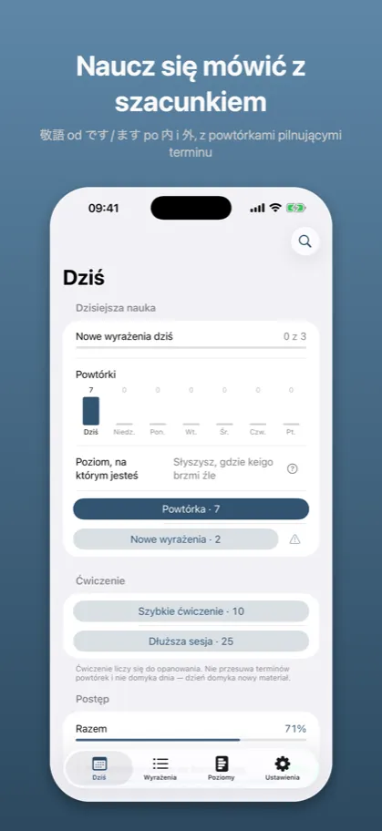
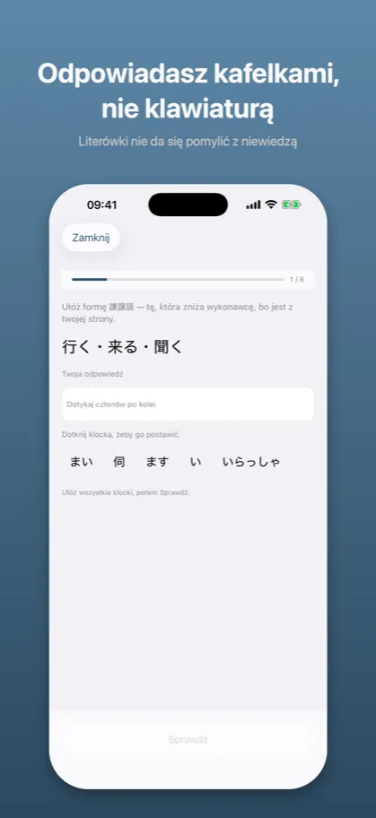
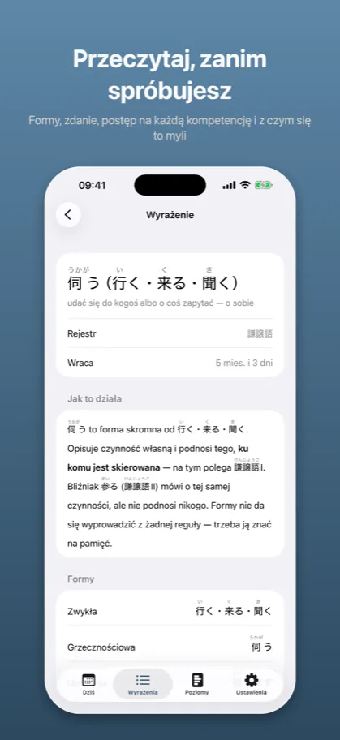
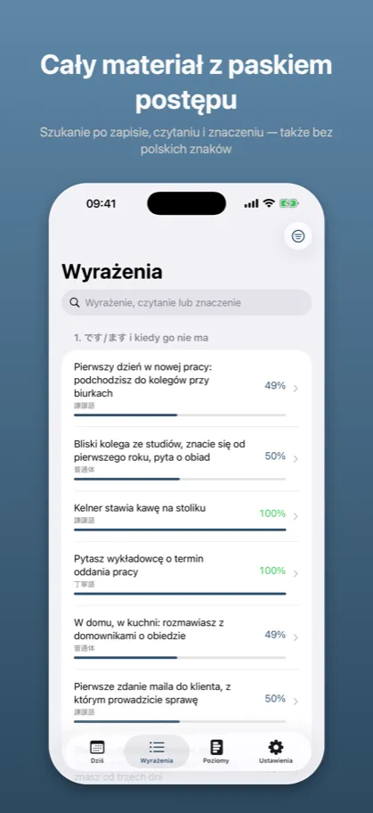
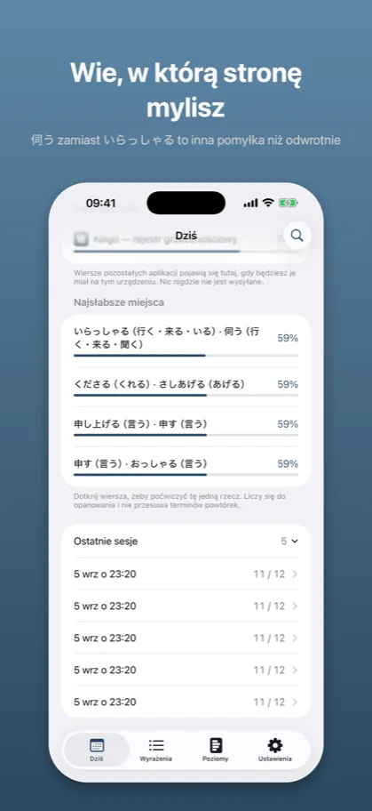

Keigo: Grzeczność japońska敬語
Japoński formalny do pracy
App Store →Aplikacja darmowa, z zakupem w środku
Znać formę to nie to samo co wiedzieć, wobec kogo jej użyć. Za dużo keigo jest błędem dokładnie tak samo jak za mało – i to jest ta połowa, której nie uczy nikt.
Jak to wygląda
{kind=link}

敬語 od です/ます po 内 i 外, z powtórkami pilnującymi terminu
{kind=link}

Literówki nie da się pomylić z niewiedzą
{kind=link}

Formy, zdanie, postęp na każdą kompetencję i z czym się to myli
{kind=link}

Szukanie po zapisie, czytaniu i znaczeniu — także bez polskich znaków
{kind=link}

伺う zamiast いらっしゃる to inna pomyłka niż odwrotnie
Opis ze sklepu
Japoński rejestr grzecznościowy to nie lista form do zapamiętania, tylko decyzja: wobec kogo.
Można wiedzieć, że 伺う to forma skromna od 行く, i mimo to postawić ją wobec kolegi o rok starszego. Można umieć お〜になる i użyć go, mówiąc o własnym szefie do klienta. Różnica nie siedzi w formie – siedzi w tym, kto do kogo mówi. Keigo pyta właśnie o to.
CZTERY RZECZY MIERZONE OSOBNO
Rejestr – wobec kogo ta forma jest w sam raz.
Kierunek – czyja to czynność: twoja czy drugiej strony.
Produkcja – złożenie formy z członów.
Przesada – rozpoznanie, że keigo jest o stopień za dużo.
Można bezbłędnie wybierać rejestr uniżony i konsekwentnie uniżać niewłaściwą osobę. Aplikacja, która uśrednia te cztery liczby w jedną, nie ma jak tego pokazać. Ta pokazuje.
ZA DUŻO KEIGO TO TEŻ BŁĄD
二重敬語 i バイト敬語 – formy, które brzmią uprzejmie i są niepoprawne. Słyszy się je codziennie i prawie nikt ich nie prostuje. To jest osobny typ pytania i osobna mierzona umiejętność.
PIĘĆ POZIOMÓW, NIE PIĘĆ LIST
- です/ます i kiedy go nie ma – zanim zacznie się podnosić ton, trzeba wiedzieć, gdzie stoi zero.
- Dwadzieścia nieregularnych – formy, których nie da się wyprowadzić z żadnej reguły.
- Wzorce produktywne – お〜になる, お〜する, 美化語.
- Przysługi i kierunek – 〜ていただく, 〜てくださる i cała różnica między nimi.
- 内 i 外 – ten sam szef dostaje formę czczącą wobec kolegi z działu i nie dostaje jej wobec klienta.
WIE, W KTÓRĄ STRONĘ MYLISZ
Pomyłka ma kierunek. Stawianie 伺う zamiast いらっしゃる to inna wada niż odwrotnie, bo pierwsza zniża drugą stronę, a druga podnosi ciebie. Aplikacja mierzy to osobno i mówi wprost, którą stronę mylisz.
ODPOWIADASZ KLOCKAMI, NIE KLAWIATURĄ
Formy składa się z członów. Nie ma pola tekstowego, więc literówki nie da się pomylić z niewiedzą, a japońska klawiatura nie jest do niczego potrzebna.
POWTÓRKI, KTÓRE PILNUJĄ TERMINU
Leksykon wraca po drabinie odstępów – od kilku godzin do pół roku. Wzorce i reguły nie mają terminów i to jest rozstrzygnięcie, nie brak: お〜になる ma wychodzić bez namysłu, a 内/外 to decyzja, nie fakt, który blaknie. Widzisz jeden ekran „Dziś”, jeden cel dzienny i jedną liczbę; różnica siedzi w doborze pytań.
BEZ KONTA, BEZ SIECI, BEZ REKLAM
Materiał jedzie w aplikacji. Postęp zostaje na urządzeniu i nie idzie nigdzie. Nie ma logowania, nie ma śledzenia, nie ma reklam.
CO JEST ZA DARMO
Poziomy 1 i 2 w całości – です/ます i wszystkie dwadzieścia form nieregularnych. Jednorazowy zakup otwiera poziomy 3–5: wzorce produktywne, przysługi, 内/外 i przesadę. Bez abonamentu.
RESZTA RODZINY
Keigo jest siódmą aplikacją tej samej rodziny. Gramatykę wykłada Kaname, odmianę Katsuyokei, partykuły Joshi, liczniki Kazoekata, czytanie Bunmyaku, mowę potoczną Kuzushi. Każda z nich pokazuje twój postęp w pozostałych – bez konta i bez wysyłania czegokolwiek.
ARBITER
Podział na kategorie i rozstrzygnięcia sporne idą za 文化庁「敬語の指針」(2007). Tam, gdzie poradniki biznesowe się nie zgadzają, aplikacja mówi, czyją stronę bierze.
Powyższy opis jest tym samym tekstem, który stoi na karcie aplikacji w App Store – pochodzi z tego samego pliku.
App Store →Aplikacja darmowa, z zakupem w środku
Częste pytania
Czego uczy Keigo?
Japoński rejestr grzecznościowy to nie lista form do zapamiętania, tylko decyzja: wobec kogo.
Można wiedzieć, że 伺う to forma skromna od 行く, i mimo to postawić ją wobec kolegi o rok starszego. Można umieć お〜になる i użyć go, mówiąc o własnym szefie do klienta. Różnica nie siedzi w formie – siedzi w tym, kto do kogo mówi. Keigo pyta właśnie o to.
Ile kosztuje Keigo?
Poziomy 1 i 2 w całości – です/ます i wszystkie dwadzieścia form nieregularnych. Jednorazowy zakup otwiera poziomy 3–5: wzorce produktywne, przysługi, 内/外 i przesadę. Bez abonamentu.
Czy działa bez internetu i bez konta?
Materiał jedzie w aplikacji. Postęp zostaje na urządzeniu i nie idzie nigdzie. Nie ma logowania, nie ma śledzenia, nie ma reklam.
Dokumenty
Pozostałe aplikacje
- Kaname: Gramatyka japońska — Powtórki JLPT: N5 N4 N3 N2 N1
- Bunmyaku: Japoński w zdaniu — Słówka, kanji i furigana
- Katsuyokei: Odmiana japońska — Czasowniki, formy, fiszki
- Joshi: Partykuły japońskie — Gramatyka i ćwiczenia JLPT
- Kazoekata: Liczniki japońskie — Liczenie, kanji, ćwiczenia
- Kuzushi: Mowa potoczna — Anime, dorama i skróty
- Shindan: Poziom japońskiego — Test JLPT: N5 N4 N3 N2 N1
- Kifuku: Akcent japoński — Wymowa, intonacja, słuchanie
- Onomatope: Dźwięki i wyrażenia — Słówka z mangi i anime